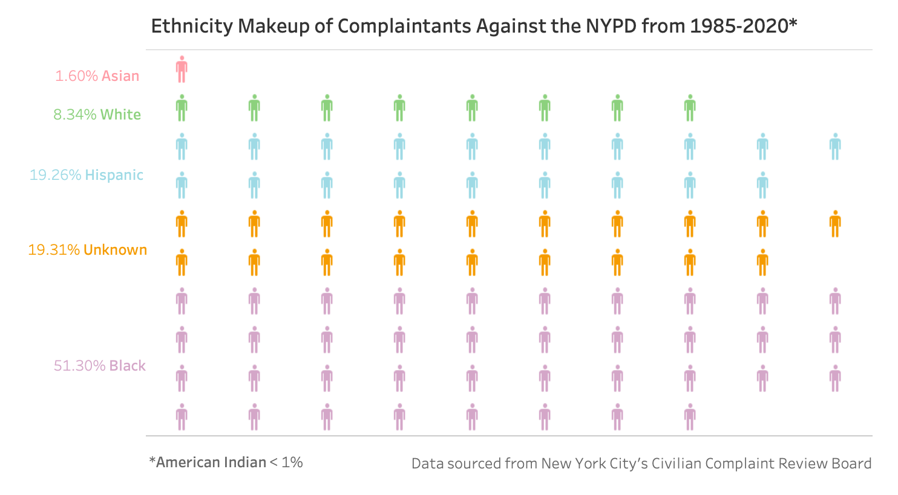
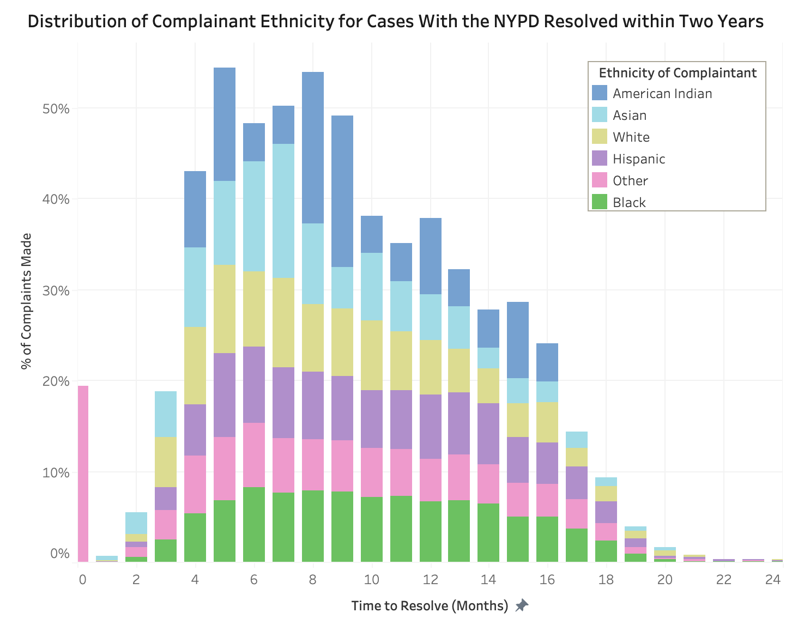

Proposition: Black individuals experience policing at a disproportionately higher rate than other groups.
FOR the Proposition: Over half of all complaintants against the NYPD are Black, therefore they are disproportionately experiencing policing at higher rates than other ethnicities.

Design Decisions and Rationale:
- [0] My motivation behind visualizing the ethnicity makeup of complaintants was to avoid reinforcing stereotypes regarding the correlation between specific ethnic groups and criminal behavior. By illustrating that complainants (individuals who have engaged with law enforcement through formal cases) are disproportionately Black indicates that Black individuals are disproportionately affected by the police.
- [2] Initially, I used a bar chart to display the data. The bar is a mark that is neutral and straightforward, however, it lacks visual impact and memorability. Drawing inspiration from Lisa Charlotte Muth's article, "What to Consider When Choosing Colors for Race, Ethnicity, and World Regions," I referenced a 2024 Wall Street Journal visualization that utilized human-shaped icons to represent percentages. Given complaintants are people, this pictographic approach appriopriately humanized the data to draw more attention. Credit for the human-shaped outline icon: Man icons created by DinosoftLabs - Flaticon
- [0] To enable representation via human-shaped icons, I computed a calculated field to represent each ethnic group's proportions from the 'Ethnicity of Complainant' and 'Complaint ID' columns from the dataset to match the number of colored icons to represent the rate of each ethnic group. This allowed demographic context for the overall complaintant distribution.
- [2] In selecting colors for each ethnic category, sensitivity to connotation was a key consideration. Again, I referenced Muth's article to choose my colors. I avoided hues resembling skin tones and opted for muted palettes to prevent unintended color associations.
- [0] I included an annotation at the bottom of the plot to acknowledge American Indian complaintants. Although this group represented a statistically insignificant percentage of the dataset, I wanted to comprehensively represent the full data. Following research on appropriate terminology through comparing "American Indian," "Native American," and "Indigenous", I selected "American Indian" due to its established legal precedence, in turn reinforcing the credibility and authority of my visualization to the reader.
- [0] I cited the data source at the bottom of the plot to provide transparency and gain trust from the reader. Since the human-shaped icon is not perceived as neutral or analytic as a bar chart, including sources helps to increase the reliability of my visualization.
AGAINST the Proposition: Similar case resolution rates across ethnic groups suggest that no group is inherently more likely to file complaints, implying no particular ethnicity group is disproportionately affected by policing.

Design Decisions and Rationale:
- [0] I chose to use a bar chart due to its neutrality as a visual mark, which helps to convey an impression of analytical objectivity and reduce perceived bias.
- [0]I transformed the data to calculate case resolution duration, defined as the interval between complaint recieved date (MM/YYYY) and case closure date. This metric provides additional insight into resolution efficiency and contextualizes the temporal scope of each complaint. This information enhances the visualization by grounding abstract complaint counts in a timeframe.
- [-0.5] The information about case resolution times in this visualization is absent from the previous visualization. Although it provides more data, arguably this data is not directly correlated to the main argument. In turn, more data can likely overwhelm the audience, potentially leading viewers to rely on the visualization's implicit conclusions rather than engaging in independent critical analysis.
- [-2] The x-axis range was deliberately restricted to a two-year subset rather than the full 51-month dataset. Since later months which contained a disproportionate number of Black complainants were excluded, thisproduces a distorted representation of the actual data distribution.
- [-1] The bar chart was intentionally stacked with Black complainants positioned at the base layer. Because a stacked bar chart results in visual misalignment where higher percentage values appear to correspond with other ethnic groups at first glance, readers who are unfamiliar with a stacked bar chart may misinterprety the data.
- [-2] I intentionally changed the y-axis percentages to measure the percentage of all complaints that were resolved in each monthly time bucket per ethnicity group. This means that groups with less total number of complaints (i.e. American Indian) exhibit proportionally higher resolution rates compared to groups with larger population (i.e. Black), creating a misleading distribution of the data.
- [2] I chose a different color scheme from the initial visualization as Muth stated that "no race should be permanently linked to one specific color".
- [-2] Overall, this visualization misrepresents the data distribution and has potential harmful implications by erasing the experiences of ethnic groups who do experience policing at disproportionately higher rates. Consequently, policies that could have helped address these issues might be disregarded because of this misleading visualiztion.
Final Reflection
I found it most difficult to come up with a compelling argument against the proposition. Since I made the visualization to support the proposition first, my mindset was already anchored with the bias that the proposition was true. This cognitive anchoring made it challenging to step back and critically analyze the data to find a different story to tell. By contrast, creating the supporting visualization felt more straightforward, likely because the proposition itself emerged organically from my initial observations of the data distribution, making the design choices feel like natural extensions of what the data was already communicating. However, once I committed to an oppositional stance, creating deceptive design choices became relatively simpler. I had a straightforward goal of obscuring the majority group's disproportionate representation, which naturally elevated the visual prominence of smaller groups, effectively inverting the data's underlying pattern. What surprised me was how little effort was required to create a misleading visualization. Small, seemingly good data cleaning choices like adjusting axis ranges, reordering categories, or changing aggregation methods were sufficient to construct an entirely different narrative from the same underlying dataset. I was surprised that many of my design choices for my opposing visualization banked on certain assumptions the audience would make when interpreting the visualization. For example, I assumed that the audience would interpret the stacked bar chart as a regular bar chart, which would lead them to misinterpret the data distribution. This revealed how deeply visualization literacy, or the lack thereof, shapes how audiences read and interpret data. A viewer unfamiliar with the conventions of stacked charts would draw entirely different conclusions than an expert, meaning the same visualization can simultaneously inform one audience and deceive another. This made me realize how different marks have in influencing perceptions, even when the underlying data is identical.
This assignment also made me more conscious of how easily confirmation bias can infiltrate the design process. When a designer believes in a proposition, they may unconsciously emphasize patterns that support it and de-emphasize those that complicate it. This suggests that ethical data visualization requires both technical skill and intellectual discipline. A designer must be willing to honestly represent patterns that challenge one's own assumptions if the data shows it. So I believe that ethical analysis means that one should comprehensively evaluate the entire dataset and stay true to the trends that the data shows. An ethical visualization should accurately communicate these patterns, even when employing aggregated or transformed representations rather than raw data. This is especially critical when the subject matter involves vulnerable or marginalized communities, as in this dataset examining complaints against the NYPD by race and ethnicity. In such contexts, analytical errors or deliberate misrepresentation can distort public understanding of systemic issues, undermine accountability, and ultimately cause real harm to the communities whose experiences the data reflects.